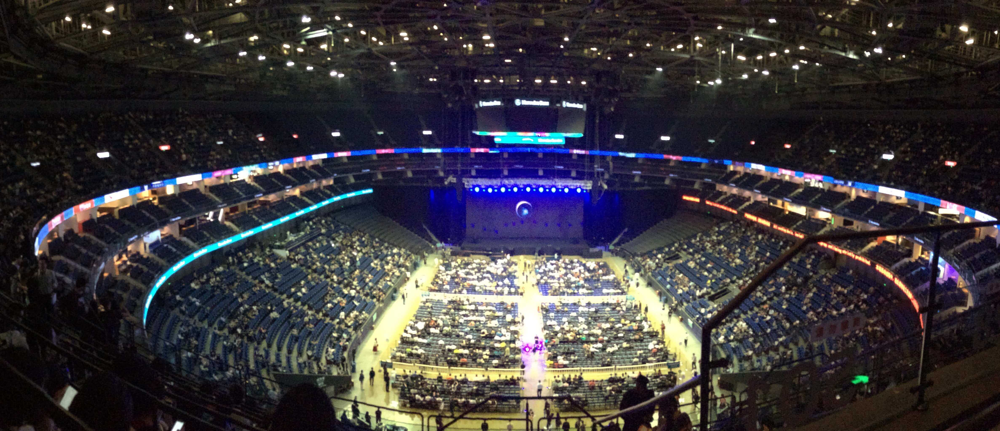
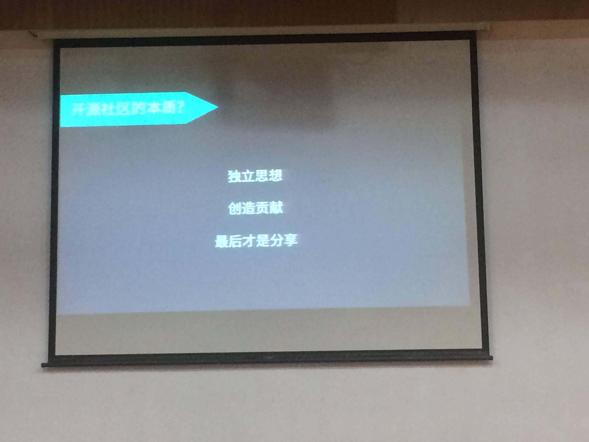
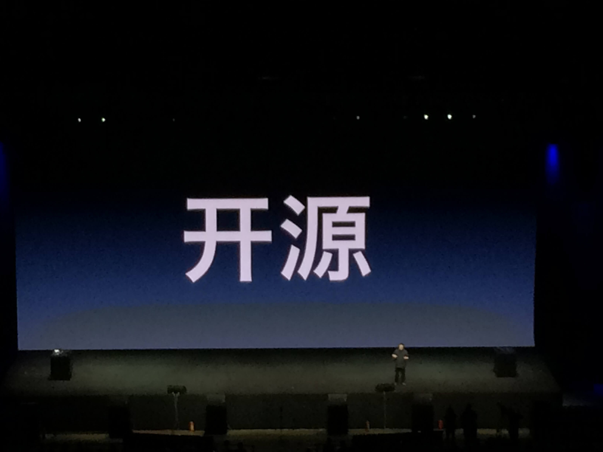
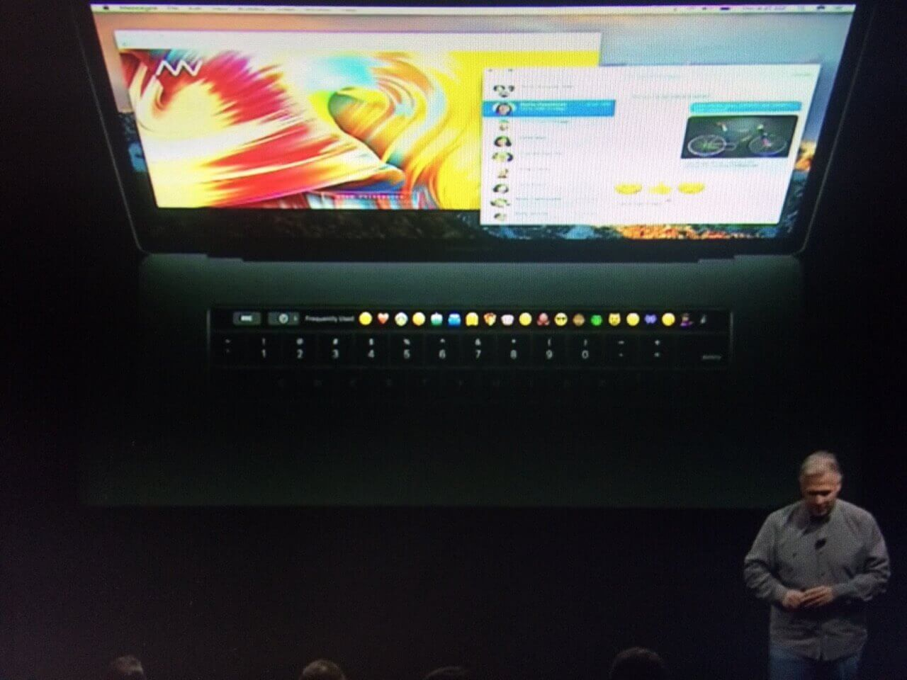
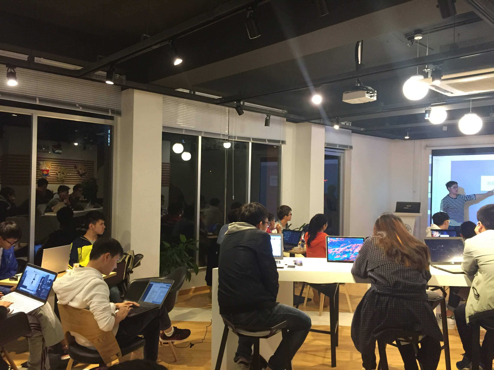

我的十月
10月是个忙碌的月份，总感觉每天都是匆匆忙忙，人生何其短……
从上个学期末就在计划的教务系统爬虫在10月终于开始真正的实施。这个月以来，大概每个周末都在尝试推进，可大多数时候都是只做一小会儿就不知道干什么去了……一直到上上个周末，抱着一种写不出来就不睡觉的精神，花了大概一天的时间。但是，然而并没有主角光环，在最后一个关键的页面上，出现了目前我无法解决的问题（某一过程陷入死循环）。请教了几个人，还是没有解决，只能等这个学期闲下来或者寒假里，再继续研究了。
这个月，参加的活动比较多。参加了深度的开发者与用户大会（DDUC），又去现场看了老罗的相声；最近又接连熬夜两天，从吃瓜到吃惊的看完了微软与苹果的发布会。

先说深度吧。可以说，深度是我在国内最为佩服的企业（至少目前），在国内一票儿骗拨款的各种国产 Linux 的“辣眼睛”中，作为一家私企，真的是一股清流。我觉得评价“Deepin 做到了小白开箱即用、好用”一点都不过分，我最喜欢的就是它的应用商店了，真的是极大的缓解了我这种“半吊子水平”的用户的 Software Panic。在现场，听了王勇（不过说起来，在去之前我并不知道深度的老板是谁，补充他也是产品经理）的演讲，也才意识到，其实深度也只是小公司，人微言轻，认真做事并活下去也是挺难的。另外，最喜欢王勇讲的一点是“独立思想 创造贡献 最后才是分享”，他觉得这才是开源社区的本质。非常认同这一点，所以，好好做事，然后才是分享。

再说说锤子发布会吧。之前对于锤子其实并不了解，知道锤子还是因为当时王自如与罗永浩的现场论战，所以这次去的时候，还和朋友戏谑说“说不定是锤子的最后一场发布会”，似乎现在看来锤子成功的活下去了。虽然锤子M1并没有激发我的购买欲，但Smartisan OS 也还是有一些亮点的。通过不同的手指指纹解锁屏幕，可以快速的打开支付宝或者微信支付的二维码界面、大爆炸分词都挺不错的。
虽然罗永浩总是不停地撕逼，甚至在本次发布会也要黑一下苹果……但他能够介绍很长时间的讯飞等企业，同时承诺以后会把 One Step 开源，这让我对其的好感度提高不少。或许，全靠国内其他友商照应吧。

10月尾声，微软与苹果接连分别召开了自己的新品发布会。总体来讲，感觉都不够让人眼前一亮，或许是因为之前看过太多爆料新闻了吧。不过，Surface Dial让我感觉还不错，以一种简单的方式补足了单纯依靠触摸屏时某些操作不便的不足。就如同之前提到的锤子通过验证不同指纹来打开支付宝或微信二维码。
而说到苹果，在库克对场内观众说可以去后场体验一下新产品的时候，熬夜到3点看完接近两个小时的发布会，让接下来还有两场考试的我，不由得想讲“裤脱看”。发布会一半的时间在演示“神奇的”Touch Bar，真是尴尬症都犯了，而到了 DJ 上台用新款 Macbook Pro 来打碟的时候，我只想说“WTF”。如果 DJ 需要触摸操作的话，那么他需要的应该是 iPad 吧。

在我看来，4个 type-c 可以说代表了未来的趋势，可问题在于，既然 Macbook Pro 都采用了 type-c，为什么不能统一一下，让 iPhone 也换上新接口呢？因为混乱的接口导致需要各种转接器，这还是我心中代表着优质产品的苹果么？
如果说已经阉割了 Touch Bar 的新款13吋 mbp，同时又阉割一系列配置是为了区分价位，可是为什么还有再阉割掉两个接口？这次发布会最让我印象深刻的不是什么产品，而是精明商人库克。15吋低配价格直涨￥5000；new macbook参数不变，价格直涨￥600……
在气愤两天之后，我想明白了，还是我太穷了（滑稽 （哭泣
这个周末，“准备”了1个月的腾讯云校园工作坊终于在昨晚办完了……从最开始准备要筛选报名者，再到线上宣传期间，中间态度的转变很有趣。宣传期间，寥寥无几的报名者，让我一度以为，能来十几个人就已经非常不错了。幸运的是，最终还是接近30个到场的参与者。虽然过程与最终结果都与我想象中的不同，但和小伙伴们一起做成一件事还是非常开心的。

现在想来，活动策划期间，最值得注意的就是团队沟通。大致有以下几点吧：
- 人数众多的 IM 沟通群会让人抓狂，尤其不限制交流话题的时候；
- 与他人沟通要注意反馈，不要想象对方拥有和你一样的思维；
- 注意说话的语气，“说者无意，听者有心”并非只是一句谚语。
- 无论如何，这大概就是我10月里值得讲述的事了……
好好做事才是真！
以上。